Recorte User Manual
Recorte
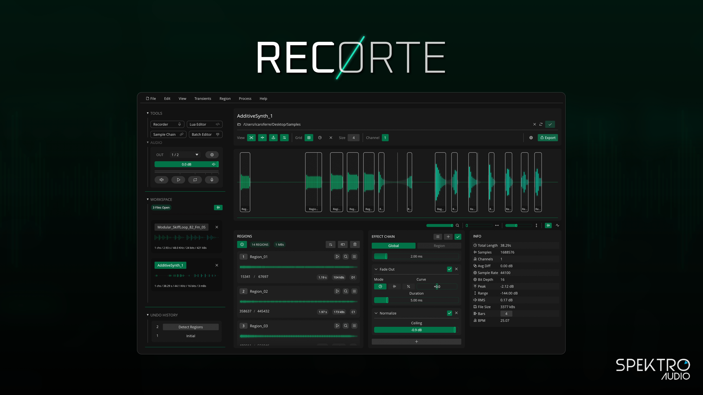
About Recorte
Recorte is a standalone audio editor designed for sample creation.
It includes features specifically built for recording, editing, processing and exporting samples, such as: an advanced audio recorder with multiple recording modes and options, automatic region detection, transient and grid-based slicing, batch region renaming, 25+ built-in effects with global and per-region effect chains, MIDI playback, and additional tools like the sample chain generator, a batch editor, and integrated Lua scripting.
You can use it during pre-production to record, slice, process and trim audio files, sample MIDI instruments, extract loops, and prepare files to be used in your favorite hardware sampler or DAW.
Built for efficiency and ease of use, the app is optimized for a fast, lightweight experience, with low resource usage, a smooth and responsive UI, and multiple ways to interact with its features.
You can also customize to your own workflow with macro-style keyboard shortcuts, 15+ built-in themes with a theme editor, default settings, JSON-based presets, and more.
Recorte is available for macOS (Silicon & Intel), Windows (x64) and Linux.
Product Page: https://spektroaudio.com/recorte
Current Version: 1.0
Usage
File
File Structure
Each file open in Recorte includes information such as:
-
Audio Buffer
-
Path
-
Export Settings
-
View Settings
-
Undo History
When you load existing files, Recorte automatically parses the audio data with the original metadata (filename, path, file format, sample rate, and bit-depth). It then converts it to its own file format with the correct path and export settings.
When you record new samples, Recorte uses the recording sample rate / bit-depth and default folder settings.
Recorte uses its file format only internally. Export files through Export actions to convert them back into an audio format.
To continue a session in the future, use the Save Workspace or Load Workspace action.
Supported Formats (Import / Export)
Recorte currently supports the following formats:
| Format | Import | Export | Limitations |
|---|---|---|---|
| WAV | ✓ | ✓ | 16 or 24 bits |
| AIFF | ✓ | ✓ | 16 or 24 bits |
| FLAC | ✓ | ✗ | - |
| MP3 | ✓ | ✗ | - |
Export Settings
Each file has a list of export settings that define how Recorte writes audio files to disk. Each row produces one output file and defines:
- Format — WAV or AIFF (integer PCM).
- Sample Rate — target sample rate of the exported file.
- Bit Depth — target bit depth of the exported file.
- Suffix — text appended to the filename before the extension.
All rows share the file's export name and path. Recorte writes each file as {filename}{suffix}.{extension} (.wav or .aif). When a file has more than one row, Recorte appends an index number to keep filenames unique, for example kick_24_4801.wav and kick_16_4402.wav.
When you open an existing file, Recorte automatically creates an export setting that matches the format, sample rate, and bit depth of the source file. New rows added in the Export view start with the current file's values.
Exporting files in Recorte
When you export a file or region, Recorte processes the audio for each row:
- Sample Rate — If the file's sample rate differs from the target sample rate, Recorte resamples the audio with its built-in (windowed-sinc) resampler.
- Bit Depth — If the target bit depth is lower than the file's bit depth, Recorte automatically converts the bit-depth and applies TPDF dither when downscaling.
- Effects — When you export a file, Recorte first renders the active (non-bypassed) global effect chain into the audio. When you export regions, Recorte renders each region with its effects before it writes the file.
Export File writes to the file's export path. If the target file already exists, Recorte opens a save dialog so you can choose a new name or location. That choice becomes the file's new export setting.
Recorte lists exported files in the Exported Files panel of the Export view. From this panel, you can copy a file path or reveal the file in the file manager.
Workspace
The group of currently open files defines the Workspace in Recorte.
Use the Save Workspace and Load Workspace actions to save and recall the contents of the current workspace.
Regions
Regions are sections of a file that can be processed and exported independently, and defined by a name, start / end sample positions, and a list of (local) effects.
Local effects are applied only to the specific region they belong to and do not affect other regions or the global project settings. Each region can be processed with its own set of parameters for targeted audio manipulation within the file.
Creating Regions
Regions can be created in different ways:
Mouse Selection
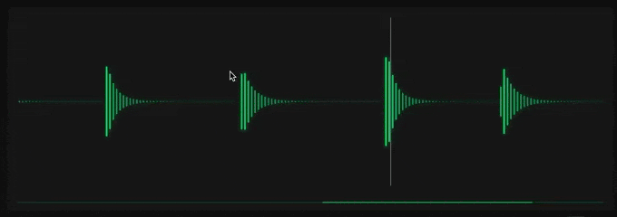
To manually create a region, click and drag on the file waveform to make a selection. Then click on the selection to create a new region.
Detect Regions
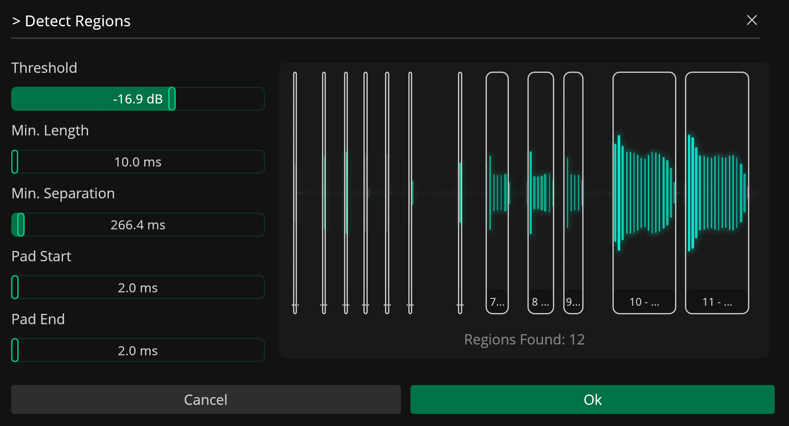
The region detector in Recorte automatically identifies relevant regions in the file based on audio gain levels.
| Parameter | Description |
|---|---|
| Threshold | Threshold for detection |
| Min. Length | Minimum length for each detected region in milliseconds |
| Min. Separation | Minimum separation (in milliseconds) between detected regions |
| Pad Start | Start padding in milliseconds |
| Pad End | End padding in milliseconds |
Detect Transients + Create Regions from Transients
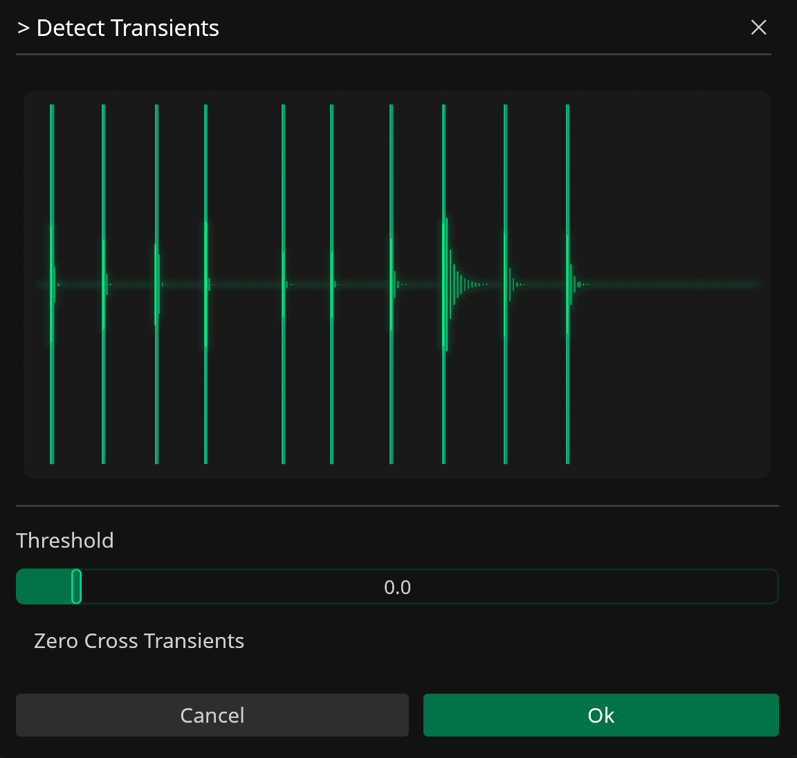
To create regions based on transients:
-
Use the
Detect Transientsaction to detect all transients in the file. -
Use the
Create Regions from Transientsto automatically create regions between all transients found.
Slice
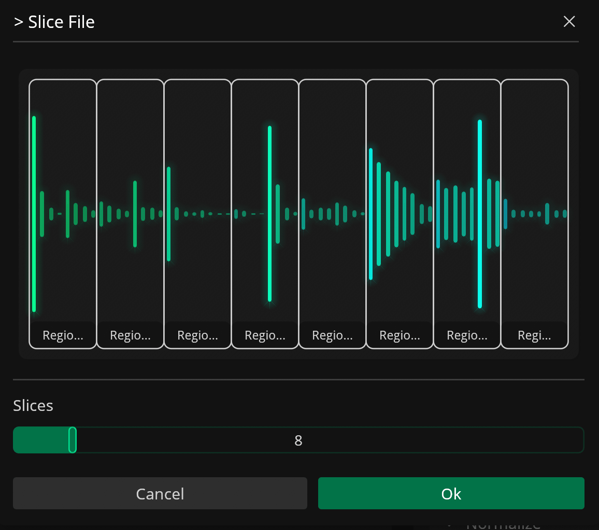
To slice the file into a specified number of regions of equal length, use the Slice File action.
Regions can also be sub-divided through the Slice Region action.
Lua Scripting
You can create regions with custom scripts in the integrated Lua Editor.
Editing Regions
Recorte also includes different methods to edit a region after it is created.
Manual Editing
You can adjust the start and end points of a region. Click and drag either end in the waveform, or use the start and end numbers in the Regions list.
Region Resize
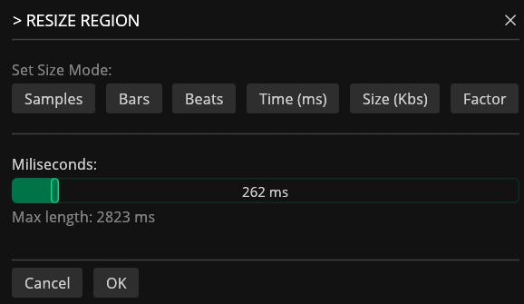
Regions can also be resized using the Resize Region action. This lets you adjust the region length based on samples, bars, beats, time (ms), size (kB), or factor.
Expand
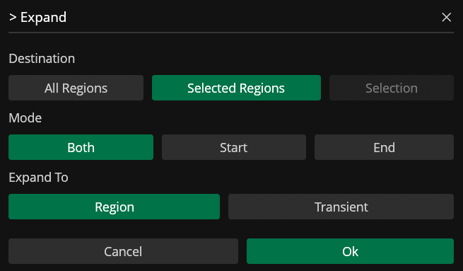
The Expand action lets you expand the start and end of regions to their neighboring regions, closest transients, or file boundaries.
It can also be used to expand the current selection in the waveform display.
Slice Region
Regions can also be sub-divided into equal parts through the Slice Selected Region action.
Pitch Detection
Recorte can detect the musical pitch of each region, with best results on monophonic audio. The result is shown as a badge in the Regions list when Region Info is enabled, and can be used as the {pitch} variable in naming templates. When the Detect Region Pitch setting is enabled (default), pitch is detected automatically after regions are created or adjusted; you can also run it manually with the Detect Pitch for All Regions action.
| Detection | Description |
|---|---|
| Single note | A sustained pitch, shown as note name + octave (e.g. A3). If it deviates more than 0.1 semitones from the nearest note, the deviation is also shown (e.g. A3 0.4) |
| Note sequence | 2–4 distinct notes in a region of up to 10 seconds, shown in order (e.g. C4-Eb4) |
| Not detected | Silent or non-tonal audio — no badge is shown |
Renaming Regions
Regions can be renamed individually by clicking on the region name in the Region list or in batch using the Rename Regions function ().
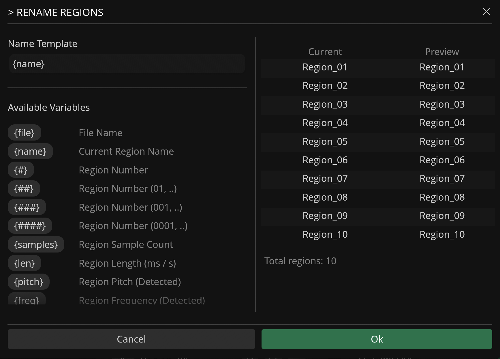
The Rename Regions feature lets you rename all regions in a file based on a naming template and any of the different variables available (such as the region number, length, sample count, sample rate, etc).
Variables used in the Name Template are automatically converted to their appropriate values during renaming.
Renaming Variables
| Variable | Description |
|---|---|
{name} |
File Name |
{region} |
Current Region Name |
{#} |
Region Number |
## |
Region Number (01..) |
### |
Region Number (001..) |
#### |
Region Number (0001..) |
{samples} |
Region Sample Count |
{len} |
Region Length (ms) |
{pitch} |
Region Pitch (Detected) |
{freq} |
File BPM (Detected) |
{sr} |
Sample Rate |
{bit} |
Bit Depth |
{ch} |
Channels Count |
Sorting Regions
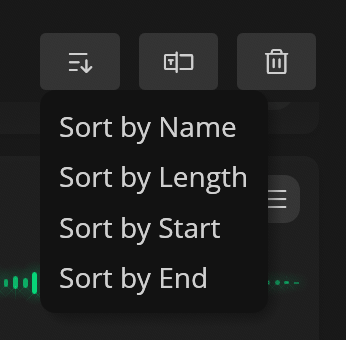
Sort regions by name, length, start, or end point using the Sort button () in the Region list header.
Exporting Regions
Regions can be exported as new files within Recorte or as audio files to your computer.
To export an individual region, click on the Export icon () in the region and select one of the options available.
To export all regions in a file as new files, use the New Files from Regions function available in the File sub-menu.
To export all regions in a file as audio files, use the Export All Regions available in the Export button or in File / Export sub-menu.
Removing Regions
To remove a region, click on the list icon () on the region's header and select the Remove Region option.
To remove the selected or all regions, click on the Trash icon in the Regions list to open the drop-down menu and select one of the available options.
Effects
Recorte features 25+ audio effects. These effects can be applied to the entire file, all regions, specific regions, or the waveform selection destructively (through the Apply actions) or non-destructively (through the Effect Chain panel in the Editor).
Effect Chains
The effect chains in Recorte let the user add effects to the active file non-destructively through a serial chain of effects. The chain is used when playing or creating files and regions (as new files in Recorte or exported audio files).
Effects can be added to the list through the () button. Reorder them by dragging and dropping on the effect title.
Each effect in the list can also be collapsed (▸), disabled () or removed () using the buttons on the effect header.
Each file loaded in Recorte contains two effect chain types:
- Global: A single global chain in the file that is applied to the file (including all regions).
- Region: Individual effect chains that can be added to each region.
Applying Effect Chains
Effect chains can also be applied (destructively) to an entire file, its regions, or a selection using the Apply Effect Chains action.
Effect Chain Presets
Effect chains can be saved and loaded as presets from the Effect Chain sub-menu () in the section header.
It is also possible to replace the default effects. Overwrite the default.json preset file or select the Save as Default option from the preset sub-menu.
Presets are stored as JSON files and can be used in any file.
Managing Effect Chains
The Effect Chain sub-menu () also contains options for copying, pasting and clearing the effect chains.
Available Effects
Channels
Mono to Stereo
Duplicates the mono channel to create a stereo signal.
Stereo to Mono
Converts stereo to mono using various modes (Mixed, Left, or Right) and an optional Dual Mono mode.
| Parameter | Description |
|---|---|
| Mode | Selection of downscale method (Mixed, Left, Right) |
| Dual Mono | Copies left to right and keeps both channels |
Creative
Bit Crush
Reduces sample rate and bit depth.
| Parameter | Description |
|---|---|
| Sample Rate Reduction | Percentage (0–100%) |
| Bit Depth | Percentage (0–100%) |
Cluster
Creates randomized echoes/delays and mixes them back into the signal.
| Parameter | Description |
|---|---|
| Max Repeats | Number of echo repeats (2–50) |
| Max Delay | Maximum delay in ms (0–1000) |
| Mix | Wet/dry mix in % (0–100) |
Frequency Shifter
Shifts all frequency components by a fixed amount (changes pitch).
| Parameter | Description |
|---|---|
| Frequency | Shift amount in Hz (-1000–1000) |
| Mix | Dry/wet mix (0–100%) |
Granular
Applies a granular effect by scanning through the audio with a modulated window.
| Parameter | Description |
|---|---|
| Grain Size (ms) | Grain size in ms (1–128) |
| Frequency | Scan rate in Hz (1–100) |
| Factor | Playback speed factor (0.01–10, logarithmic) |
| Window Type | Window type (None, Hanning, Blackman, Tukey, Tukey Wide) |
Spectral Gate
Attenuates spectral bins below a threshold using FFT-based processing.
| Parameter | Description |
|---|---|
| Threshold | Fraction of frame peak (0–1) |
| Depth | Attenuation amount (0 = none, 1 = full mute) |
| Fft Size | FFT window size (512, 1024, 2048, 4096) |
| Sliding Window | Enable streaming mode |
Transient Shaper
Enhances or reduces transients (attack) and sustain (release).
| Parameter | Description |
|---|---|
| Attack | Transient control (-1–1) |
| Release | Sustain control (-1–1) |
Edit
Pad
Adds silence to the beginning and/or end of the buffer.
| Parameter | Description |
|---|---|
| Start | Silence added at the beginning (ms, samples, or %) |
| End | Silence added at the end (ms, samples, or %) |
Repeat
Repeats the entire selection N times.
| Parameter | Description |
|---|---|
| Repeats | Number of repetitions |
| Ratchet Mode | Speeds up the audio by the repeat factor |
Reverse
Reverses the audio waveform.
| Parameter | Description |
|---|---|
| Reverse | Reverses the buffer |
EQ / Filter
Comb Filter
Creates resonant peaks or notches using a delay line (phaser / flanger effect).
| Parameter | Description |
|---|---|
| Mode | Feed Forward (notches) or Feedback (peaks) |
| Delay Time | Delay in ms (0.1–20) |
| Gain | Feedback gain (-0.90–0.90) |
| Mix | Dry/wet mix (0–100%) |
DC Filter
Removes DC offset using a high-pass filter.
| Parameter | Description |
|---|---|
| Frequency | Cutoff frequency in Hz |
DJ EQ
Three-band equalizer with low shelf, mid bell, and high shelf.
| Parameter | Description |
|---|---|
| Low Gain | Boost/cut in dB (-24 to 24) |
| Mid Gain | Boost/cut in dB (-24 to 24) |
| High Gain | Boost/cut in dB (-24 to 24) |
| Mode | EQ mode (Classic, Isolator) |
Tone EQ
Passive-tilt EQ that boosts/cuts bass and treble symmetrically around a center frequency.
| Parameter | Description |
|---|---|
| Tone | Tilt amount (-1.0 = bass boost, 1.0 = treble boost) |
| Slope | Slope in dB per octave (6, 12) |
| Center Frequency | Pivot frequency in Hz (200–2000) |
| Q Gain | Resonance control |
Fade
Fade In
Gradually increases volume from silence at the start of the selection.
| Parameter | Description |
|---|---|
| Mode | Unit selector (ms, samples, or %) |
| Curve | Fade curve shape (-1.0–1.0) |
| Duration | Fade length |
Fade Out
Gradually decreases volume from silence at the end of the selection.
| Parameter | Description |
|---|---|
| Mode | Unit selector (ms, samples, or %) |
| Curve | Fade curve shape (-1.0–1.0) |
| Duration | Fade length |
Gain
Compressor
Reduces the dynamic range of the audio signal.
| Parameter | Description |
|---|---|
| Ratio | Compression ratio (1–20x) |
| Makeup Gain | Output gain compensation (0–24 dB) |
| Attack | Attack time (1–100 ms) |
| Release | Release time (1–250 ms) |
| Threshold | Level at which compression engages (-60 to 0 dB) |
Drive
Adds saturation/distortion using a tanh curve for warm overdrive.
| Parameter | Description |
|---|---|
| Gain | Drive intensity (0–10x) |
Gain
Applies a linear gain multiplier to the audio signal.
| Parameter | Description |
|---|---|
| Gain | Multiplier (0–10x) |
Normalize
Scales the signal so its peak reaches a target maximum level.
| Parameter | Description |
|---|---|
| Ceiling | Target peak level in dB (-24 to 0) |
Pitch / Speed
Pitch Shift
Changes pitch without affecting duration using FFT-based processing.
| Parameter | Description |
|---|---|
| Amount | Pitch shift in semitones (-64 to 64) |
| Window Size | FFT window size (10–100) |
Rate
Changes playback speed. Optionally preserves pitch with anti-aliasing resampling.
| Parameter | Description |
|---|---|
| Rate | Playback speed in % (6.25–1600) |
| Semitones | Pitch offset in semitones (-48 to 48) |
| Anti Aliasing | If true, uses sinc resampling to preserve pitch |
Stretch to BPM
Resamples the audio so it fits a target tempo over a given number of bars.
| Parameter | Description |
|---|---|
| BPM | Target tempo (20–300) |
| Bars | Number of bars to fill (1–32) |
Integer Speed Up
Speeds up playback by skipping samples (integer factor, pitch changes).
| Parameter | Description |
|---|---|
| Factor | Speed multiplier (1–10) |
Integer Stretch
Stretches audio by duplicating samples (integer factor, pitch changes).
| Parameter | Description |
|---|---|
| Factor | Stretch multiplier (1–10) |
Time Stretcher
Advanced grain-based time-stretching with formant preservation and stereo spread.
| Parameter | Description |
|---|---|
| Mode | BPM (From BPM, To BPM) or Ratio (Multiplier) |
| Multiplier | Time-stretch ratio (0.01–4x) |
| Grain Size | Grain size in ms (0.1–200) |
| Overlap | Grain overlap in % (0–100) |
| Window Type | Window function (Hanning, Hamming, Blackman, Bartlett, Welch, Rectangular) |
| Formant | If true, preserves vocal formants |
| Reverse | If true, reverses every 4th grain |
| Grain Spread | Stereo spread in ms (0–100) |
| Quality | Processing quality (Lofi, Standard, High) |
Resample
Resample
Changes the sample rate using sinc interpolation (Blackman-Harris window).
| Parameter | Description |
|---|---|
| Sample Rate | Destination rate in Hz (100–192k) |
| Keep size | If true, resamples then stretches back to original length |
Actions
About
Many of Recorte's features can be controlled using actions, which you can trigger using keyboard shortcuts or the Action Palette.
File
Auto Trim File
Trim the active file to its audio content. A temporary region spanning the whole file is shrunk based on loudness (threshold), and all samples before and after it are removed.
Parameters:
| Name | Description |
|---|---|
| Threshold | Threshold in dB |
Close Active File
Close the active file in the workspace.
Close All Files
Close all files in the workspace.
Duplicate File
Duplicate the active file.
New File From Selected Region
Create a new file from each selected region in the active file.
New Files From All Regions
Create new files from each region available in the active file.
Open File
Open a file from disk into the workspace (opens the file dialog).
Slice File
Split the file into equal slices / regions.
Parameters:
| Name | Description |
|---|---|
| Slices | Number of slices / regions |
Trim File to Selected Regions
Trim the active file based on the selected regions' start and end.
Playback
Play
Start playback of the active file, or the current selection / selected regions, with custom pitch and gain.
Parameters:
| Name | Description |
|---|---|
| Pitch | Playback rate (1.0 = original speed), bipolar slider (-10.0 to 10.0) |
| Gain | Gain level (0.0 to 1.0) |
| Loopable | Loop playback (boolean toggle) |
Play Note
Start playback with the pitch and gain set by an incoming MIDI note (Base note: C4). Plays the current selection or selected regions at that pitch; without a selection, each note from C4 up plays a different region.
Parameters:
| Name | Description |
|---|---|
| Note | Note number / pitch (0-127) |
| Velocity | Note velocity (0-127), sets the playback gain |
Stop Playback
Immediately stop any ongoing playback.
Toggle Playback Loop
Enable or disable loop playback.
Editing
Cut Selection
Cut the current selection from the active file and store it in the clipboard.
Copy Selection
Copy the current selection from the active file and store it in the clipboard.
Paste
Paste the content of the clipboard into the active file based on a specified position and mode.
Parameters:
| Name | Description |
|---|---|
| Position | Prepend: Paste to the beginning of the file. Append: Paste to the end of the file. Position: Paste at a specific position (0–100% of the file length). |
| Mode | Insert: Inserts the new clipboard content at position.Replace: Replace existing audio with the clipboard content. Mix: Mixes existing audio with clipboard content (blend controlled by the mix ratio, 0.0 to 1.0). Add: Overlay existing audio with clipboard content. |
Convert Bit-Depth
Convert the active file bit-depth and apply dithering when you reduce the bit depth.
Parameters:
| Name | Description |
|---|---|
| Bit Depth | Target bit depth (1 to 24) |
| Dither | Apply dithering during conversion (boolean toggle) |
Convert Sample Rate
Convert the active file's sample-rate via re-sampling.
Parameters:
| Name | Description |
|---|---|
| Sample Rate | Target sample rate in Hz (1 to 192000) |
| Interpolation | Resampling interpolation: Nearest, Linear, or Cubic |
Duplicate Channel
Duplicate one of the available channels in the active file based on its channel number.
Remove Channel
Remove a channel from the active file based on its channel number. The last remaining channel cannot be removed.
Region Actions
Auto Trim Selected Regions
Shrink the selected regions' start and end based on the audio loudness.
Parameters:
| Name | Description |
|---|---|
| Threshold | Threshold in dB |
Auto Trim All Regions
Shrink all regions' start and end based on the audio loudness.
Parameters:
| Name | Description |
|---|---|
| Threshold | Threshold in dB |
Zero-Cross Selected Region
Snap the selected region to the nearest zero-crossing point.
Zero-Cross Transients
Snap all transients to the nearest zero-crossing points.
Create Region From Selection
Create a new region from the current selection.
Create Region From Transients
Create a region at each detected transient. Transients must be detected first.
Parameters:
| Name | Description |
|---|---|
| Pad Start | Padding added before each region start (ms) |
| Pad End | Padding added after each region end (ms) |
Remove Region
Remove a region in the active file based on the region index.
Remove Selected Region
Remove the currently selected region.
Remove All Regions
Remove all regions in the active file.
Duplicate Selected Region
Make a copy of the selected region.
Expand
Expand the current selection or selected regions to the next or previous region or transient boundary.
Parameters:
| Name | Description |
|---|---|
| Destination | Auto: Expand automatically based on the current context. All Regions: Expand all selected regions. Selected Regions: Expand the selected region(s). Selection: Expand the current selection. |
| Location | Start: Expand towards the start. End: Expand towards the end. Both: Expand both directions. |
| Expand To | Region: Expand to the next region boundary. Transient: Expand to the next transient point. |
Extend (All / Selected) Region Start
Extend the start of all / selected regions backwards until the previous region or transient.
Extend (All / Selected) Region End
Extend the end of all / selected regions forwards until the next region or transient.
Join All Regions
Consolidate the audio from all regions in the active file to a new file. It is also possible to add some separation and crossfading between regions.
Parameters:
| Name | Description |
|---|---|
| Separation | Gap between segments in ms |
| Crossfade | Crossfade duration in ms |
Join Selected Regions
Consolidate the audio from the selected regions in the active file to a new file. It is also possible to add some separation and crossfading between regions.
Parameters:
| Name | Description |
|---|---|
| Separation | Gap between segments in ms |
| Crossfade | Crossfade duration in ms |
Slice Selected Region
Split the selected region into equal regions.
Parameters:
| Name | Description |
|---|---|
| Slices | Number of slices / regions |
Resize Region
Open the dialog to resize the current region.
Resize Region By
Resize region by a specific size preset.
Parameters:
| Name | Description |
|---|---|
| Size | Size unit: Millis, Samples, Beats, Bars, SizeKbs, or Factor |
| Millis | Time in milliseconds (optional, positive integer) |
| Samples | Number of samples (optional, positive integer) |
| Beats | Number of beats (optional, positive integer) |
| Bars | Number of bars (optional, positive integer) |
| SizeKbs | Size in kilobytes (optional, positive integer) |
| Factor | Multiplication factor (optional, positive float, default: 1.0) |
Sort Regions
Reorder the regions of the active file by Name, Position, Start, End, or Length. Only the region order and numbering change — the audio itself is not moved.
Parameters:
| Name | Description |
|---|---|
| Sorting Mode | NamePositionStartEndLength |
Select Region
Select a specific region based on the chosen selection mode.
Parameters:
| Name | Description |
|---|---|
| Selection | First: Select the first region. Last: Select the last region. Shortest: Select the shortest region. Longest: Select the longest region. |
Move Regions
Shift selected regions by a time period.
Parameters:
| Name | Description |
|---|---|
| Period | Shift amount in samples, milliseconds, or percentage (positive moves later in the file, negative earlier) |
Export
Export File
Export the active file to its path (overwrite if the file already exists).
Export All Regions
Export all regions in the active file as separate audio files to the file path using the Export settings.
Export Selected Regions
Export the selected regions in the active file as separate audio files to the file path using the Export settings.
Export All Files
Export all files in the workspace.
Transients & Detection
Clear Transients
Remove all detected transients.
Detect Regions
Analyze the active file and create regions from detected audio segments.
Parameters:
| Name | Description |
|---|---|
| Threshold | Detection threshold in dB |
| Min. Length | Minimum region length in ms |
| Min. Separation | Minimum silence between regions in ms |
| Pad Start | Padding added before each region start (ms) |
| Pad End | Padding added after each region end (ms) |
Detect Transients
Analyze and mark transients in the current file.
Parameters:
| Name | Description |
|---|---|
| Threshold | Detection Threshold |
| Zero-Cross Transients | Toggle zero-crossing for all detected transients |
Detect Pitch for All Regions
Run pitch detection on every region.
Recording
Start Recording
Begin audio recording using the settings defined in the Audio Recorder.
Stop Recording
Stop the active recording and create a new file in the workspace from the recording.
Set Recording Length
Configure the recording duration in seconds.
Parameters:
| Name | Description |
|---|---|
| Seconds | Length in seconds |
Load Audio Recorder Preset
Load a saved recorder configuration.
Parameters:
| Name | Description |
|---|---|
| Preset | Preset file path (.json) |
Save Audio Recorder Preset
Export the current recorder settings as a JSON file.
Effects & Processing
Process
Apply a single audio effect to the active file, all regions, selected regions, or the current selection. See Effects for available effects.
Parameters:
| Name | Description |
|---|---|
| Apply To | File / All Regions / Selected Regions / Selection |
| Effect | Effect to Apply |
Apply Effect Chains
Apply the current effect chain to the specified destination.
Parameters:
| Name | Description |
|---|---|
| Apply To | File / All Regions / Selected Regions / Selection |
| Clear Effects | Clear the effect chain after applying (boolean toggle) |
Load Effect Preset
Load a saved effect preset.
Parameters:
| Name | Description |
|---|---|
| Preset | Preset file path |
Copy Effect Chain
Copy the current effect chain to the clipboard.
Paste Effect Chain
Paste an effect chain from the clipboard.
Clear Effect Chain
Remove all effects from the chain.
Save Effect Preset
Save the current effect chain as a preset.
Save Effects as Default
Save the active file's current effect chain as the default preset. New files use this chain when they are created.
Reveal Effect Preset Folder
Open the effect preset folder in Finder.
Send to Sampler
Send audio to a sampler with custom parameters.
Parameters:
| Name | Description |
|---|---|
| Source | Source type: File, All Regions, Selected Region, or Selection |
| Output Channel | Output device channel (1 to output_channels) |
| Gain dB | Output gain in dB (-96.0 to 0.0, step 3.0 dB) |
| Convert to Volca | Enable Volca Syro stream conversion (optional, boolean toggle) |
| Sample Slot | Sample slot for Volca (optional, 1 to 100) |
| Quality | Conversion quality (optional, 8 to 16) |
Apply Effects To Selected Regions
Apply the file's current effect chain to the selected regions.
Parameters:
| Name | Description |
|---|---|
| Clear Effects | Clear the effect chain after applying (boolean toggle) |
Apply Effects To Regions
Apply the file's current effect chain to specific regions by index.
Parameters:
| Name | Description |
|---|---|
| Regions | List of region indices |
| Clear Effects | Clear the effect chain after applying (boolean toggle) |
Batch Processor
Load Batch Editor Preset
Load a batch processor preset.
Parameters:
| Name | Description |
|---|---|
| Preset | Preset name or file path (.json) |
Save Batch Editor Preset
Save the current batch processor settings.
UI & Navigation
Select Next File
Activate the next file in the workspace.
Select Previous File
Activate the previous file in the workspace.
Select Next Region
Move selection to the next region.
Select Previous Region
Move selection to the previous region.
Zoom All
Fit the entire file in view.
Zoom Region
Zoom to the current region.
Zoom Selection
Zoom to the current selection.
Zoom
Zoom the view to the selected destination (auto, file, all regions, or selection).
Parameters:
| Name | Description |
|---|---|
| Destination | Destination (Auto/File/AllRegions/Selection) |
Center to Selected Region
Pan view to center on the selected region.
Toggle Waveform Mode
Switch the waveform view between line and bar display modes.
Selection
Set Selection to Playback Position
Mark the current playback position as the selection start. If a selection start is already marked, it sets the selection end instead.
Clear Selection
Deselect everything.
Extend Selection to Region
Expand selection to the next region boundary.
Extend Selection to Transient
Expand selection to the next transient.
Workspace
Save Workspace
Save the current workspace layout and state as a JSON file (opens a save dialog).
Open Workspace
Load a saved workspace from a JSON file (opens a file dialog).
Export Theme
Export the current UI theme as a JSON file to the themes folder (opens a save dialog).
Lua Scripting
Run Lua Script
Execute a Lua script file. See Lua Scripting / Editor for scripting details.
Parameters:
| Name | Description |
|---|---|
| Script | Script file path |
Run Lua Editor Script
Run the script in the Lua editor panel.
Tools & Windows
Open Action Palette
Open the Action Palette modal.
Open Audio Recorder
Open the audio recorder modal.
Open Lua Editor
Open the Lua scripting editor.
Open Sample Chain
Open the Sample Chain tool modal.
Open Batch Editor
Open the Batch Editor tool modal.
Open Export Settings
Open the export settings dialog.
Open Keyboard Shortcuts
Open the keyboard shortcuts configuration.
Open Settings
Open the application settings.
Action Palette
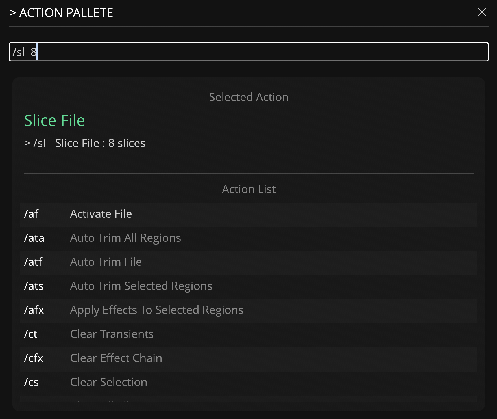
The Action Palette provides a keyboard-centric workflow for triggering Actions within Recorte using slash commands (for example, /ats).
To open the Action Palette, press the c key or run the Open Action Pallete action.
Usage
You may type a slash command directly (for example, /ata) or search by typing any part of a command name or its description. The list uses fuzzy matching across both fields. The input field accepts commands with optional parameters, such as /ata -10.
Navigating Suggestions
When suggestions are available:
- Up / Down arrows — Move through the filtered command list.
- Tab — Autocompletes the input to the first suggested command and populates its parameter placeholders.
- Enter — Selects the highlighted item and inserts its full slash command (with parameters) into the input field. Press Enter again, or click away to lose focus, to execute the command and close the modal.
UI Components
-
Input Field: Used to enter a slash command or action name. When a command is recognized, it displays below as the Selected Action with its current parameter values.
-
Action List: A two-column table showing matched commands. The left column shows the slash command (for example,
/ats). The right column shows its description. Use the up and down arrow keys to navigate and press Enter to select an item. Selecting an item updates the input field with the corresponding slash command.
Audio Playback
Audio Processing in Recorte
Recorte uses a custom background and offline audio engine for playback, meaning files and regions are processed and rendered in a background thread and cached to reduce CPU usage and latency.
Outputs
Main Output
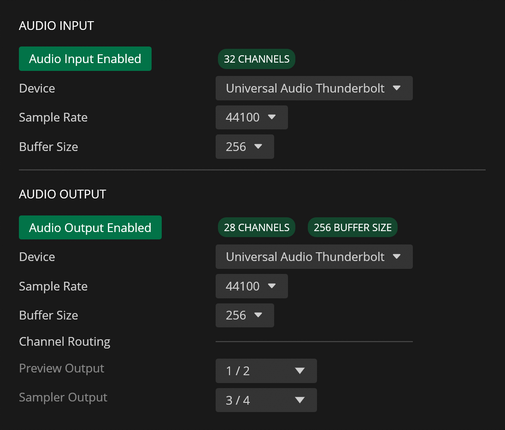
The Main output serves as the primary audio playback channel.
You can configure the output device, channel, sample rate, and buffer size via the Audio tab in Settings.
Sample Output
The Sampler output lets the user select a dedicated channel (in the same output device as Main) to use with Send to Sampler action and it's designed to speed up the process of sending / playing files and regions to external hardware samplers.
Audio Controls (Sidebar)
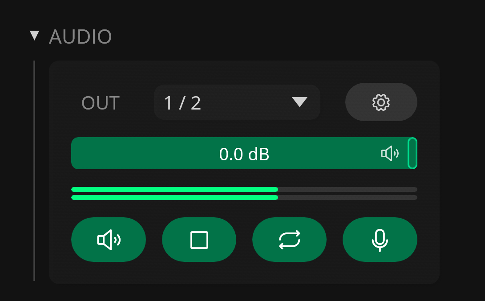
The Audio section in the Sidebar contains different parameters that can be used to control the audio playback in Recorte, including:
- Drop-down menu for Main output channel
- : Button to open the Audio settings
- Volume slider for the Main output
- : Button to enable / disable audio output
- : Button to stop playback (panic)
- : Button to enable / disable looping
- : Button to enable / disable audio input
MIDI
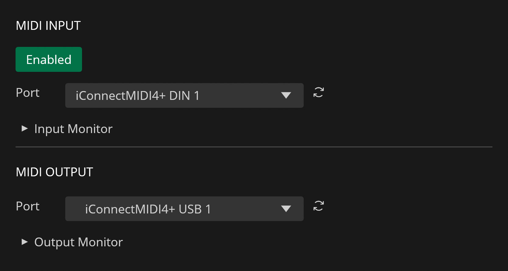
Recorte includes MIDI input and output support that can be set up via Settings.
MIDI Input
Recorte supports MIDI input from the selected MIDI Input port (in Setting's MIDI tab), allowing received MIDI notes to play the active file similarly to a sampler.
Upon receiving a MIDI note, Recorte uses the incoming pitch and velocity to control playback rate (pitch) and volume, generating PlayMIDI actions based on these rules:
- Selection: Plays the selected range, transposed via MIDI.
- Region Selected: Only plays the selected region, transposed according to the MIDI note.
- Regions Present (None Selected): Regions are mapped across MIDI notes starting at C3, with each note triggering a different region.
- No Regions in Active File: Plays entire file.
- No Active File: No action occurs.
MIDI Output
The MIDI output port can also be selected from the Setting's MIDI tab and it's used to send MIDI notes when recording audio with the MIDI Recording Mode.
Tools
Tools
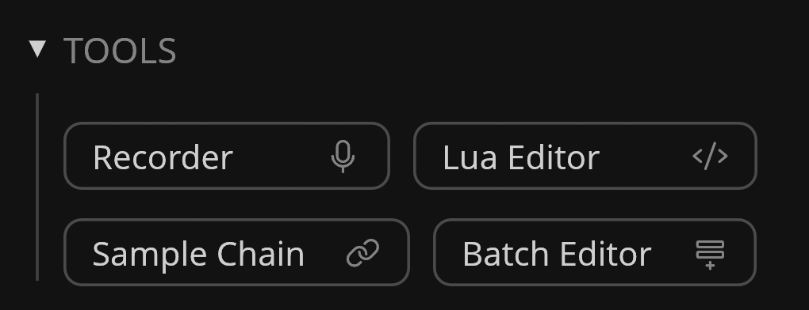
Tools in Recorte add more ways of creating and editing files based on different features and workflows that go beyond the features avaialble in the core editor.
Available Tools
Audio Recorder
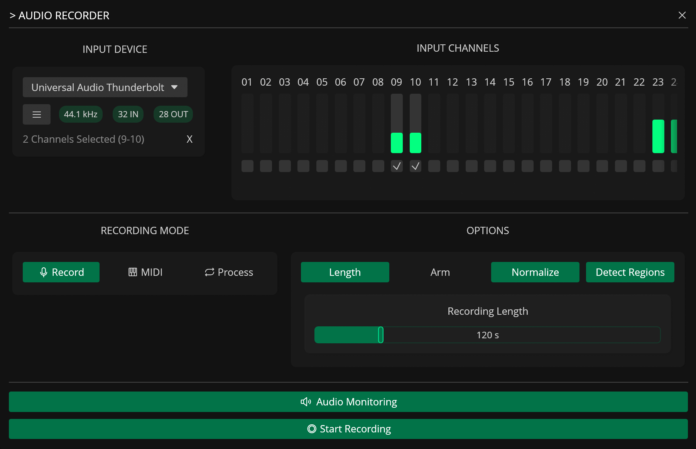
The Audio Recorder captures audio from external hardware, software instruments, or internal routing to create new samples. It features three recording modes for different tasks (standard manual recording, automated MIDI sampling, and external signal processing), multi-channel input selection, and real-time monitoring.
Recording Modes
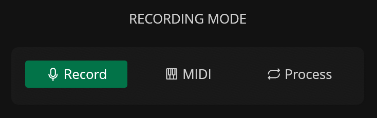
Record
Record is the standard mode that simply records incoming audio from the selected inputs.
MIDI
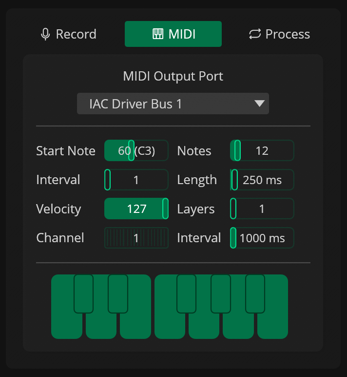
MIDI mode samples MIDI-enabled instruments and devices automatically. It sends MIDI notes to the selected MIDI port using a predefined range that you set.
| Parameter | Description |
|---|---|
| Start Note | First MIDI note |
| Notes | Number of notes to play |
| Step Size | Interval step size in semitones |
| Length | Length of each MIDI note in milliseconds |
| Velocity | Base MIDI velocity |
| Layers | Number of velocity layers |
| Channel | MIDI Channel |
| Interval | Interval between notes in milliseconds |
Process
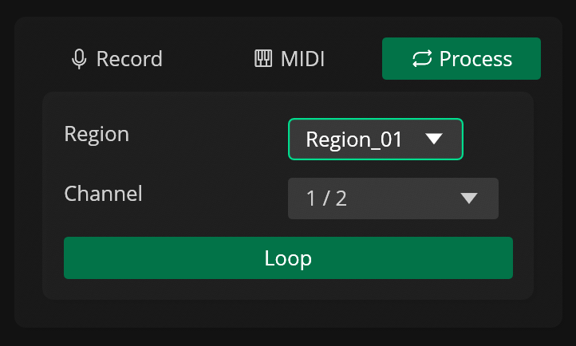
Process helps you process samples with external audio effects, such as hardware compressors or delays. It plays a region, a selection, or the entire active file through a different audio output channel of the selected audio output device. The output of the external effect can then be routed to one of the channels on the active audio input device and recorded as a new sample.
| Parameter | Description |
|---|---|
| Source | Audio source to to be played externally (File / Selection / Selected Region) |
| Out Gain | Output gain in decibels |
| Out Channel | Audio output device channel |
| Loop | Toggle looping playback for the selected region |
Options
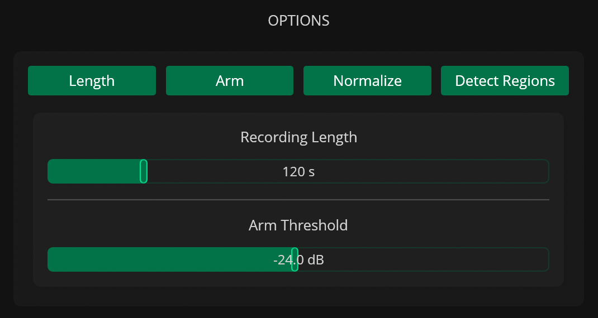
The Audio Recorder also includes additional options that can be used to improve the recording workflow.
| Option | Description |
|---|---|
| Length | Limit the recording to a specified length in seconds |
| Arm | Toggle arm recording (wait for signal above threshold) |
| Normalize | Normalize the recording |
| Detect Regions | Automatically detects regions in the recording |
Input Monitoring
Input monitoring can be enabled through the Audio Monitoring button.
Presets
Presets for the Audio Recorder can be saved and loaded through the list () button in the Input Device section.
Each preset stores the selected audio input device, channels, recording mode, monitoring state and options.
Warning
Enabled channels may not load correctly if the audio input device included in a preset is not available when the preset is loaded.
Lua Editor
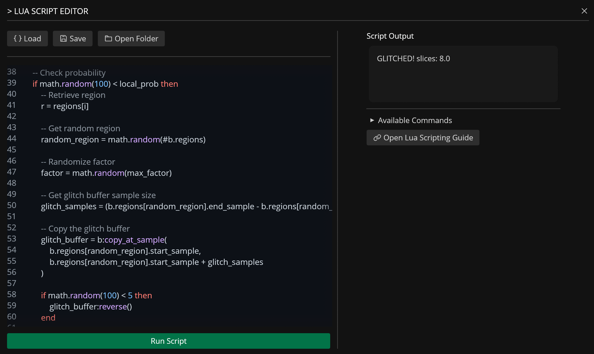
The Lua Editor lets users extend Recorte functionality through custom Lua scripts (Lua v5.4), that users can edit with the built-in editor or any text editor.
Lua is a lightweight, high-performance scripting language designed for embedded systems and extensibility, created and maintained by a dedicated team in PUC-Rio (Brazilian university) and used by many games and applications.
For more information about Lua, visit https://www.lua.org/.
Scripts are stored in the settings / scripts folder and can be run via the Lua Editor or custom keyboard shortcuts.
You can access and manipulate Files, Regions, Effects, and Actions from Lua through custom tables and functions that are available during runtime.
Scripting
action Table
Global functions that queue actions for the application to process.
| Name / Signature | Parameters | Functionality | Return Value |
|---|---|---|---|
action.open_path(path) |
path: string |
Queues opening of an audio file at the specified filesystem path. | void |
action.activate_file(index) |
index: number |
Switches the active file to the one at the given index (1-based). | void |
action.file_count() |
None | Returns the total number of loaded files. | number |
action.get_file(index) |
index: number |
Retrieves a File object at the specified index (1-based). |
File (userdata) |
action.update_file(index, file) |
index: number, file: File |
Replaces the file at the given index with a new File object (1-based). |
void |
action.get_active_file() |
None | Returns the currently active File object. |
File (userdata) |
action.update_active_file(file) |
file: File |
Replaces the active file with a new File object. |
void |
action.close_file(index) |
index: number |
Queues closing/removing a file at the given index (1-based). | void |
action.close_all_files() |
None | Queues closing all loaded files. | void |
action.select_next_file() |
None | Queues switching to the next file in the list. | void |
action.select_previous_file() |
None | Queues switching to the previous file in the list. | void |
action.zoom_all() |
None | Queues UI zoom to fit the entire waveform. | void |
action.zoom_selected_region() |
None | Queues UI zoom to the currently selected region. | void |
action.zoom_selection() |
None | Queues UI zoom to the current time selection. | void |
action.export_all_files() |
None | Queues export of all loaded files to disk. | void |
action.debug_table(table) |
table: table |
Debug utility: logs the contents of a Lua table to Recorte's console. | void |
action.available() |
None | Lists all available action function names. | string[] (table) |
active_file Table
Utilities for interacting with the currently active file.
| Name / Signature | Parameters | Functionality | Return Value |
|---|---|---|---|
active_file.get() |
None | Retrieves the currently active File object. |
File (userdata) |
active_file.update(file) |
file: File |
Replaces the active file with a new File object. |
void |
active_file.update_buffer(buffer) |
buffer: AudioBuffer |
Replaces the audio buffer of the active file. | void |
active_file.select_regions(indices) |
indices: table<number> |
Selects multiple regions for the active file (1-based). | void |
active_file.selected_regions() |
None | Returns the currently selected region indices (1-based). | table<number> |
active_file.play() |
None | Queues playback of the active buffer/region. | void |
active_file.close() |
None | Queues closing the currently active file. | void |
active_file.new_files_from_regions() |
None | Queues creation of new files from all existing regions. | void |
active_file.export() |
None | Queues export of the currently active file. | void |
active_file.export_region(index) |
index: number (1-based) |
Queues export of the region at the given index of the active file. | void |
active_file.export_selected_regions() |
None | Queues export of only selected regions. | void |
active_file.export_all_regions() |
None | Queues export of all regions as separate audio files. | void |
active_file.load_effect_preset(path) |
path: string |
Loads an effect preset into the active file. | void |
active_file.available() |
None | Lists available file utility function names. | string[] (table) |
Other Globals
| Name / Signature | Parameters | Functionality | Return Value |
|---|---|---|---|
info.file_count |
Property | Contains the total number of loaded files. | number |
check_equal(list1, list2) |
list1: string[], list2: string[] |
Utility/debug: adds lengths of two string arrays. | number |
AudioBuffer Object
Represents the raw audio data, metadata, and processing methods.
| Name / Signature | Parameters | Functionality | Return Value |
|---|---|---|---|
sample_count |
Field (Read) | Total number of audio samples in the buffer. | number |
bpm |
Field (Read) | Tempo metadata for the buffer. | number |
samples |
Field (Get/Set) | Raw sample data (multi-channel array). | table |
sample_rate |
Field (Read) | Sample rate in Hz. | number |
bit_depth |
Field (Read) | Audio bit depth (e.g., 16, 24, 32). | number |
bars |
Field (Get/Set) | Number of musical bars in the buffer. | number |
grid_size |
Field (Get/Set) | UI grid snapping size. | number |
name |
Field (Get/Set) | Display name of the buffer. | string |
regions |
Field (Get/Set) | Array of Region objects. |
table |
effects |
Field (Get/Set) | Serialized global effects applied to the buffer. | table (serialized) |
size_kb() |
None | Calculates memory size of the buffer. | number (KB) |
is_mono() |
None | Checks if buffer has 1 channel. | boolean |
is_stereo() |
None | Checks if buffer has 2 channels. | boolean |
length_ms() |
None | Calculates duration in milliseconds. | number |
channel_diff() |
None | Computes difference between channels. | table |
restore() |
None | Reverts buffer to its original reference samples. | void |
resample(new_rate) |
new_rate: number |
Resamples audio to a new sample rate. | void |
add_region(start, end) |
start: number, end: number |
Adds a region at sample positions. | void |
remove_region(index) |
index: number (1-based) |
Removes a region by index. | void |
region_count() |
None | Returns number of regions. | number |
get_region_info(index) |
index: number (1-based) |
Returns metadata for a region. | RegionInfo |
remove_all_regions() |
None | Clears all regions. | void |
detect_regions(threshold, min_length_ms) |
threshold: number, min_length_ms: number |
Auto-detects regions based on loudness threshold and minimum length. | table<Region> |
detect_transients(threshold) |
threshold: number |
Marks transient points for snapping. | void |
get_region(index) |
index: number (1-based) |
Returns a Region object. |
Region |
join_all_regions(sep_ms) |
sep_ms: number |
Concatenates all regions with separation silence. | AudioBuffer |
auto_trim_region(idx, thresh) |
idx: number, thresh: number |
Shrinks region edges below threshold. | void |
zero_cross_region(index) |
index: number (1-based) |
Snaps region edges to zero-crossings. | void |
zero_cross_transients() |
None | Snaps transient markers to zero-crossings. | void |
slice(slices) |
slices: number |
Divides entire buffer into N equal regions. | void |
slice_region(idx, slices) |
idx: number, slices: number |
Divides a specific region into N equal parts. | void |
copy_at_sample(start, end) |
start: number, end: number |
Copies samples to a new buffer. | AudioBuffer |
copy_at_position(start, end) |
start: 0.0-1.0, end: 0.0-1.0 |
Copies proportional section to new buffer. | AudioBuffer |
cut_at_sample(start, end) |
start: number, end: number |
Cuts samples, returns cut section. | AudioBuffer |
cut_at_position(start, end) |
start: 0.0-1.0, end: 0.0-1.0 |
Cuts proportional section, returns cut. | AudioBuffer |
paste_at_sample(buf, idx, repl) |
buf: AudioBuffer, idx: number, repl: boolean |
Pastes buffer at sample index (insert/replace). | void |
paste_at_position(buf, pos, repl) |
buf: AudioBuffer, pos: 0.0-1.0, repl: boolean |
Pastes buffer at proportional position. | void |
mix_at_sample(buf, pos, mix) |
buf: AudioBuffer, pos: number, mix: number |
Mixes buffer into target at sample position. | void |
mix_at_position(buf, pos, mix) |
buf: AudioBuffer, pos: 0.0-1.0, mix: number |
Mixes buffer at proportional position. | void |
update_region(idx, region) |
idx: number, region: Region |
Overwrites an existing region. | void |
export_region(index) |
index: number (1-based) |
Exports region as a new independent buffer. | AudioBuffer |
normalize(value) |
value: number |
Applies normalization. | void |
fade_in(duration) |
duration: number |
Applies fade-in envelope. | void |
fade_out(duration) |
duration: number |
Applies fade-out envelope. | void |
gain(value) |
value: number |
Applies gain adjustment (linear). | void |
rate(value) |
value: number (multiplier) |
Changes playback rate/time-stretch. | void |
reverse() |
None | Reverses audio samples. | void |
pitch(amount) |
amount: number (semitones) |
Pitch-shifts audio. | void |
pitch_shift(amount) |
amount: number (semitones) |
Pitch-shifts audio with formant preservation. | void |
size() |
None | Returns the formatted size of the buffer as a string. | string |
channel() |
None | Returns the number of channels. | number |
remove_channel(index) |
index: number (1-based) |
Removes a channel by index. | void |
trim_to_regions(indices) |
indices: table<number> (1-based) |
Trims the buffer to the specified regions. | void |
- Methods ending in
_at_positionaccept0.0(start) to1.0(end). Values are automatically clamped.
Region Object
Represents a defined slice/segment of an audio buffer.
| Name / Signature | Parameters | Functionality | Return Value |
|---|---|---|---|
name |
Field (Get/Set) | Display name of the region. | string |
start_sample |
Field (Get/Set) | Start position in samples. | number |
end_sample |
Field (Get/Set) | End position in samples. | number |
length |
Field (Read) | Calculated sample length (end - start). |
number |
pitch_str |
Field (Read) | String representation of the region's pitch. | string |
bpm |
Field (Get/Set) | Tempo metadata specific to the region. | number |
RegionInfo Object
Read-only metadata returned by AudioBuffer:get_region_info().
| Name / Signature | Parameters | Functionality | Return Value |
|---|---|---|---|
index |
Field (Read) | Zero-based index of the region. | number |
name |
Field (Read) | Region name. | string |
start_sample |
Field (Read) | Absolute start in samples. | number |
end_sample |
Field (Read) | Absolute end in samples. | number |
start_rel |
Field (Read) | Relative start position (0.0-1.0). | number |
end_rel |
Field (Read) | Relative end position (0.0-1.0). | number |
length_ms |
Field (Read) | Duration in milliseconds. | number |
File Object
Represents a loaded audio file in the workspace.
| Name / Signature | Parameters | Functionality | Return Value |
|---|---|---|---|
path |
Field (Get/Set) | Filesystem path of the loaded file. | string |
buffer |
Field (Get/Set) | The underlying AudioBuffer object. |
AudioBuffer |
Effect Object
Internal effect representation (typically handled through the effects field).
| Name / Signature | Parameters | Functionality | Return Value |
|---|---|---|---|
name |
Field (Read) | Auto-formatted string name of the effect. | string |
Important Scripting Notes
-
1-Based Indexing: All Lua functions referencing
indexfor regions or files use 1-based indexing. Passing0throws a runtime error in most methods;action.close_file(0)andactive_file.export_region(0)treat0as1. Out-of-range indices on queued actions are silently ignored. Methods returningRegionInfo(likeAudioBuffer:get_region_info()) use 0-based indexing for theindexfield. -
Asynchronous Actions: All
action.*functions do not execute immediately. They push commands to an internal action queue that the UI/app processes on the next tick. -
In-Place vs Copy: Methods like
normalize,fade_in,pitch, andslicemodify theAudioBufferin-place and returnvoid. Methods likecopy_at_...,cut_at_..., andjoin_all_regionsreturn newAudioBufferinstances without altering the source. -
Serialization: The
effectsfield expects/returns a Lua table that serializes to JSON matching the RustEffectstructure. -
Object Copying: When you retrieve an
AudioBufferorFileobject (for example,action.get_active_file()), you get a clone/snapshot. Modifications to this Lua object do not affect the application state. You must use anupdate_function to apply changes (for example,action.update_active_file()oractive_file.update_buffer()). -
EffectCreation: To set theeffectsfield, provide a Lua table of effect slots matching the RustEffectSlotstructure: each slot has astatusboolean and aneffectentry keyed by theEffectvariant name (externally tagged). Examples:
b.effects = {
{ status = true, effect = { Gain = -6.0 } },
{ status = true, effect = { Normalize = 0.9 } },
{ status = true, effect = { PitchShift = { window = 50, amount = 2.0, oversampling = 16 } } },
}
Sample Chain
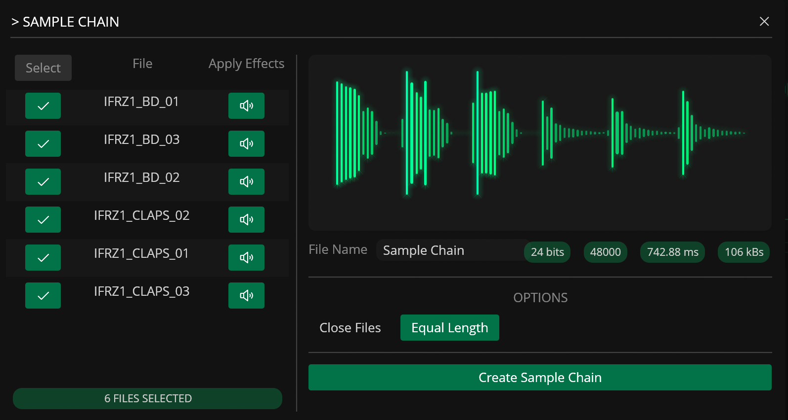
The Sample Chain tool joins multiple audio files into a single file, reducing file count and facilitating workflows with hardware instruments such as the Elektron Octatrack, Teenage Engineering OP1, Dirtywave M8, and the Polyend Tracker.
When chaining multiple files, the tool uses the lowest sample rate and bit depth of the selected files and automatically converts all files to those settings.
| Option | Description |
|---|---|
| Close Source Files | Closes all selected files after the new file is created |
| Equal Length | Automatically matches the length of all files by padding the end |
Batch Editor
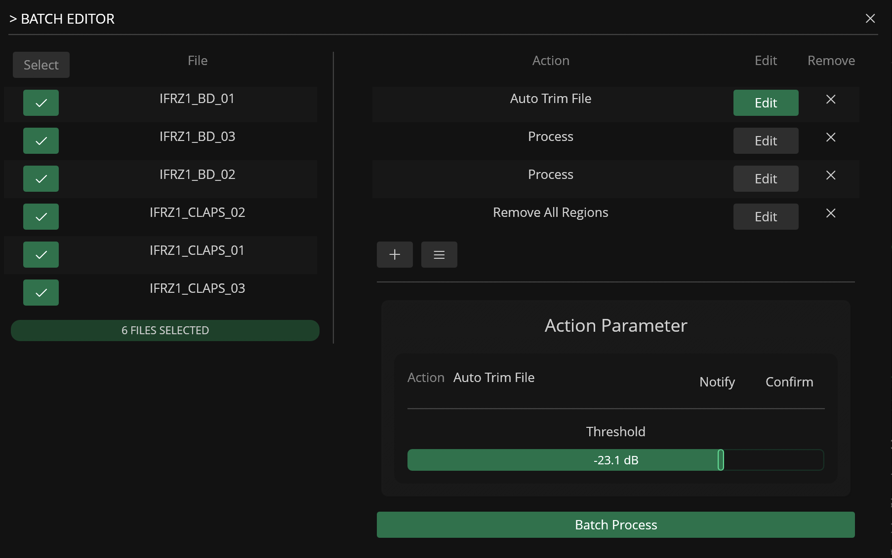
The Batch Editor tool makes it easier to process and export multiple files open in the Workspace at once using a customizable action list.
Actions can be added to list via the add () button and the parameters for each action can be edited by clicking on the Edit button.
Warning
The list of available actions in the Batch Editor only include actions compatible with batch-procesing.
Presets
Presets for the Batch Editor can be saved and loaded via the list () button.
Presets store the entire sequence of actions and their specific parameter configurations, allowing you to quickly recall complex processing chains for different projects.
For example, you might create a "Drum Prep" preset that includes normalization, a short fade-out, and sample rate conversion.
Using presets ensures consistency across multiple batches and significantly speeds up the workflow when dealing with recurring tasks.
Example Use Cases
-
Auto-Trim and normalize multiple files
-
Apply watermark to multiple files
Editor
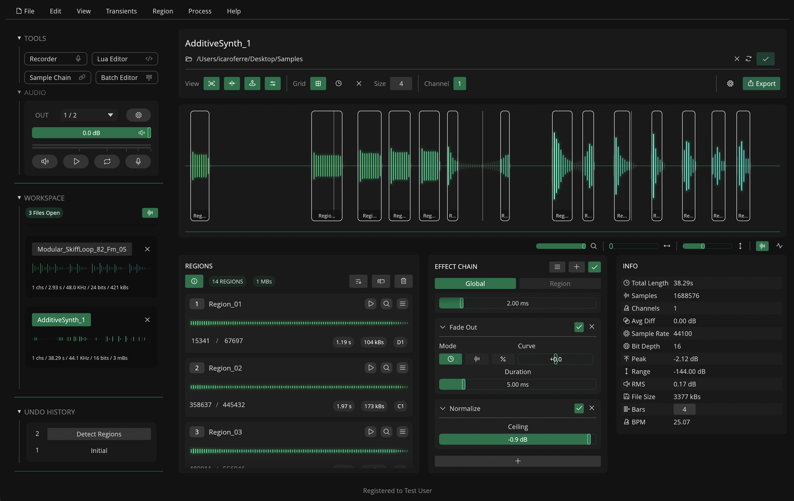
Sidebar
The left sidebar on the user interface contains different sub-sections.
Tools
This sub-section contains a list of the available tools in Recorte.
Each tool adds extra functionality to the editor to create, edit and interact with files available in the workspace.
Available tools (click on tool name for more information):
RecorderLua EditorSample ChainBatch Editor
Audio
The audio sub-section contains different controls for the audio engine, including:
- Output Channel drop-down selector
- Button to open Recorte's settings ()
- Slider for output / preview volume
- Level meter showing the current output level
- Buttons for enabling audio output (), playing / stopping playback ( / ), toggling looping () and enabling audio input ().
Info
Output volume and looping are not stored across sessions and are set to default when the application is open.
Workspace
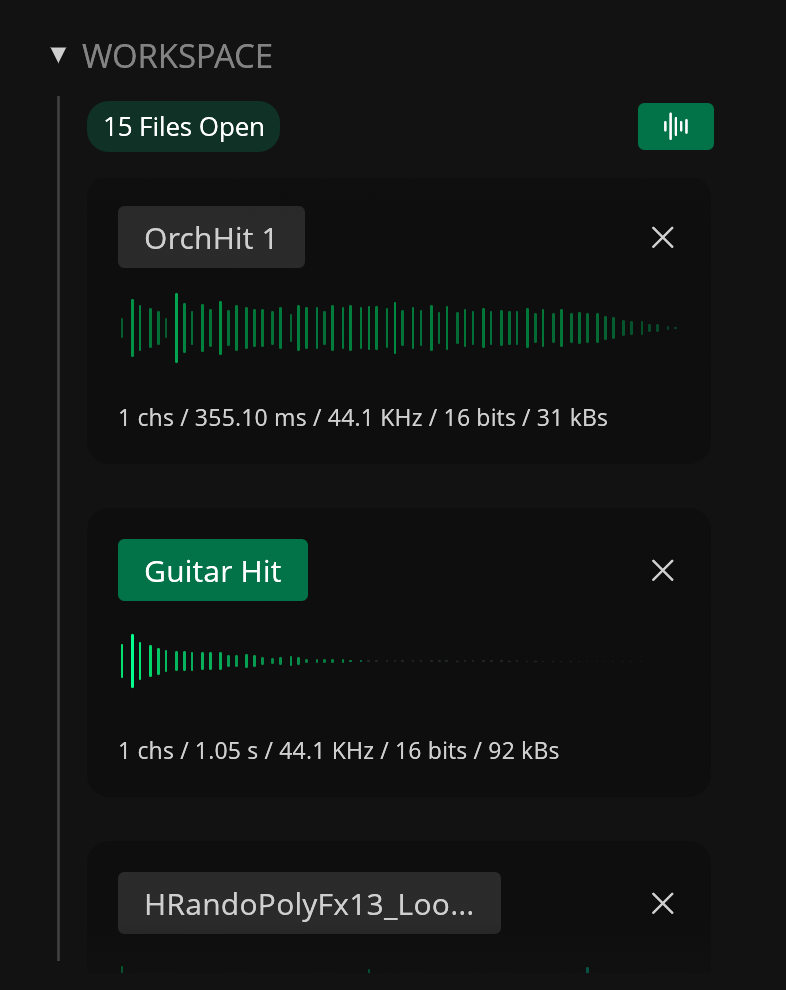
The workspace sub-section contains the list of files currently open in your workspace. A badge shows how many files are currently open.
Each file shows a header with its name, a close button (), a waveform preview, and file information (channels, length, sample rate, bit depth, and size).
The waveform previews can be hidden through the waveform button () to compact the file list.
Undo History
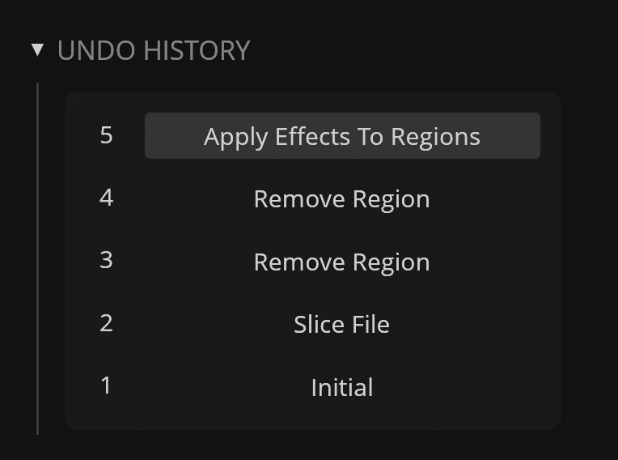
The undo history sub-section contains a list of undoable changes made to the currently active file.
Click an item in the list to revert to the selected state.
Clipboard
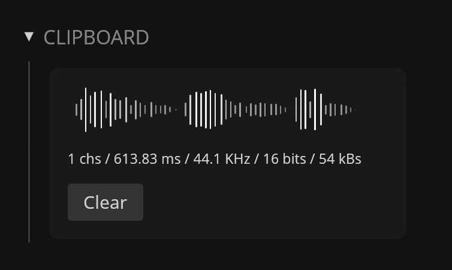
The clipboard sub-section displays the content of the workspace clipboard when any audio is copied to it (using the Copy command).
It shows a waveform preview, file information (channels, length, sample rate, bit depth, and size), and a Clear button to empty the clipboard. When there is no content, it shows an "Empty Clipboard" placeholder.
Editor Panel
The main content panel contains the parameters available for the active file.
File Header

The file header is divided into 3 separate rows:
-
File name: text field to display and edit the file name (click to edit)
-
File path / folder: path for export (click on to reveal, to change, or to clear). A status indicator shows a check () when the file is saved, or a warning () with an export option when it contains unsaved changes
-
View Options / Export: toggles and controls for the waveform display, grid, channel and export (see table below)
| Name | Icon | Description |
|---|---|---|
| View | - | - |
| Regions | Toggle the visibility of regions in the waveform display | |
| Transients | Toggle the visibility of transients in the waveform display | |
| Position | Toggle the visibility of the viewport position guide | |
| Waveform Parameters | Toggle the visibility of waveform display parameters | |
| Grid | - | - |
| Enable Grid | Enable the waveform grid | |
| Grid Size | - | Set the grid size (1–256) |
| Enable Timelines | Enable time markers | |
| Disable Grid | Disable Grid / Time | |
| Channel | - | - |
| Channel Focus | - | Select the channel shown in the waveform display (All + per-channel for multichannel files) |
| Export | - | - |
| Export Settings | Open export settings | |
| Export | Open export menu (Export Selected Region, Export All Regions, Export File, Export File As) |
Waveform Display
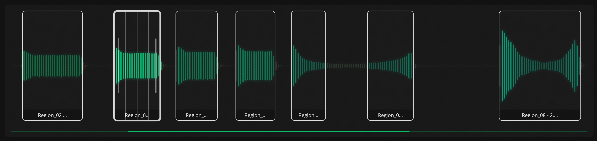
The waveform display works as an interactive display of the currently active file.
It displays the waveform (using one of the available Waveform Parameters modes), regions, transients and the background grid. When interacted with a mouse, it can make selections, create and manipulate regions, and set the playback position.
Create / Edit Regions
Regions can be created and edited through the Waveform display.
To create a region, click and drag on the waveform to create a selection. Then click the selection to create a new region.
To move the region, click and drag on an existing region. Drag the left or right edge of a region bound to adjust its start or end point.
To edit multiple regions simultaneously, hold Command (macOS) or Control to select them. Release the key, then click and drag to edit.
Mouse Interactions
| Action | Target | Result |
|---|---|---|
| Click | Waveform | Set / Cancel Playback Position |
| Click and Drag | Waveform | Create Selection |
| Mouse Scroll (horizontal) | Waveform | Scroll horizontally |
| Mouse Scroll (vertical) | Waveform | Adjust Zoom |
| Shift + Click | Waveform | Move the end of an existing selection |
| Command/Ctrl + Drag | Waveform | Scroll horizontally / zoom vertically (hold Shift for fine control) |
| Click | Selection | Create Region |
| Click | Region | Select Region |
| Command/Ctrl + Click | Region | Add / Remove Region to Selection |
| Click and Drag | Region | Move / Resize Selected Region |
| Shift + Click and Drag | Region | Move / Resize Selected Region (Fine Control) |
| Right-Click | Any | Open Contextual Menu |
Waveform Parameters
The Waveform Parameters section contains different parameters to control the Waveform Display.
| Parameter | Icon | Description |
|---|---|---|
| Zoom | Set horizontal zoom | |
| Position | Set the horizontal scroll position | |
| Vertical Zoom | Set the vertical zoom | |
| Bar Waveform Mode | Set Waveform Display mode to Bars | |
| Line Waveform Mode | Set Waveform Display mode to Lines |
Regions
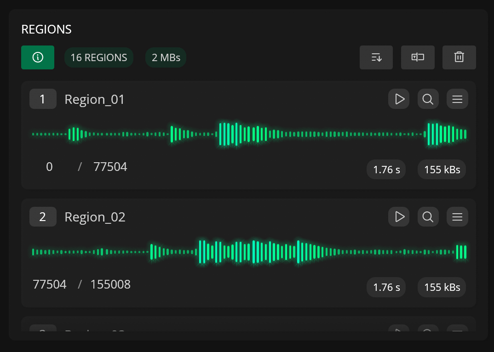
The Regions panel contains a scrolling list of the regions in the active file. Badges show the total number of regions and their combined size. The panel also includes options to sort, rename, and remove regions.
Buttons
| Header Button | Description |
|---|---|
| Toggle Region Info / Parameters | |
| Sort regions (by name, length, start or end position) | |
| Rename Regions | |
| Remove selected or all regions |
Regions List
The top section of each region contains a number button. Click it to select the region. A text input shows and edits the region name. Buttons let you play, zoom to, and show options for the region.
Each region also contains a waveform display. Click it to add or remove a region from the current selection.
When Region Info is enabled (), each region row also shows the start and end sample values (drag to adjust) and badges with the region length, size, and detected pitch.
| Button | Description |
|---|---|
| Play Region | |
| Zoom to Region | |
| Show Region Options |
The Region Options sub-menu also includes options to delete and export the region.
Effect Chain

The Effect Chain panel is used to add, remove, and re-order effects in the Global and Region effect chain.
For more information about Effects and Effect Chains, check out the Effects section.
Buttons
| Button | Description |
|---|---|
| Show Effect Chain Options | |
| Add effect to selected chain | |
| Enable / Disable effect chains |
Effect list
Use the tab buttons to switch between the Global and Region effect chains.
The effect list shows all effects in the selected chain. It includes the effect name, parameters, and buttons to collapse, enable or disable, and remove each effect.
Effects can be re-ordered in the chain through drag-and-drop.
Note
The Region Effect Chain is independent per-region. When set to Region, the Effect Chain shows the list of effects for the last selected region.
Effect Chain Presets
Individual effect chains can also be saved as presets (JSON format) and loaded into the Global or Region chains.
When opening or recording a new file, Recorte automatically loads the default preset to the Global effect chain.
Effect Chain Options
| Option | Description |
|---|---|
| Apply to Selection | Applies the effect chains to the current waveform selection (destructively) |
| Apply to Selected Regions | Applies the effect chains to selected regions (destructively) |
| Apply to All Regions | Applies the effect chains to all regions (destructively) |
| Apply to File | Applies the effect chains to the entire file (destructively) |
| Copy | Copies the selected effect chain to the clipboard |
| Paste | Pastes from the clipboard to the selected chain |
| Clear | Clears the effect chain |
| Oversample | Sets the oversampling factor for the effect chains |
| Presets | Save, save as default, or load effect chain presets; open the presets folder |
Info
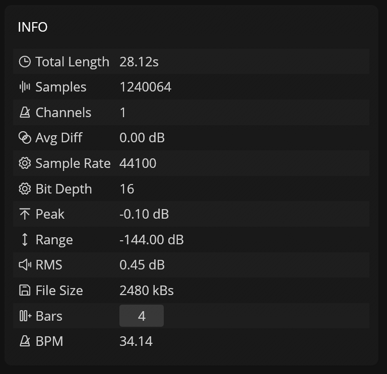
The Info panel contains an information table for the active file.
| Info | Description |
|---|---|
| Total Length | Length of the file |
| Samples | Number of samples |
| Channels | Number of channels |
| Avg Diff | Difference between channels (dB) |
| Sample Rate | Sample Rate of the file |
| Bit Depth | Bit-depth of the file |
| Peak | Max sample value (dB) |
| Range | Dynamic Range (dB) |
| RMS | Average RMS of the file |
| File Size | File size in kilobytes |
| Bars | Number of bars (editable, used for BPM calculation) |
| BPM | Calculated BPM based on sample count x bars |
Export Settings

Open the Export Settings modal by clicking the export settings button (). It provides a three-panel interface to configure export options and manage exported files:
Regions Panel (Left)
The left panel displays all regions available in the active file with options to select, sort, and preview them.
| Control | Description |
|---|---|
| Select All | Select every region in the list |
| Select None | Deselect all regions |
| Sort Menu | Sort regions by name, length, start position, or end position |
| Region List | Click to select/deselect; hover for waveform preview tooltip |
The selected regions determine which audio will be exported when an export action is triggered.
Export Settings Panel (Center)
The center panel contains a table where each row defines one export configuration with the following columns:
| Column | Control | Description |
|---|---|---|
| # | Auto-numbered | Row index |
| Format | Drop-down selector | Choose between WAV and AIFF |
| Sample Rate | Drag value input | Set sample rate from 1 to 192,000 Hz |
| Bit Depth | Drag value input | Set bit depth from 1 to 24 bits |
| Suffix | Text input | File name suffix appended before the extension (default hint: _{bitDepth}_{sampleRate/1000}) |
Each row can be removed individually using the remove button () on the right.
Below the table, two action buttons are available:
| Button | Description |
|---|---|
| Add a new export configuration row (defaults to active file's sample rate, bit depth, and channel count) | |
| Export | Open export options menu |
The export menu provides three actions:
| Option | Description |
|---|---|
| Export Selected Region | Export only the currently selected region using all configured settings |
| Export All Regions | Export every region in the file using all configured settings |
| Export File | Export the entire active file (without regions) using all configured settings |
Exported Files Panel (Right)
The right panel lists all files exported during the current session, displayed in reverse chronological order (most recent first).
Each row shows:
- File name (without extension)
- — Copy the full file path to the clipboard
- — Reveal the file in the system's file manager
Setup
Installation
System Requirements
| OS | Minimum Version | Notes |
|---|---|---|
| macOS | 11 (Big Sur) or later | - |
| Windows | Windows 10 | Windows 11 is also supported |
| Linux | Any current distribution | FUSE support is required for the AppImage |
-
4GB RAM: Recorte uses approximately 80MB of RAM at idle but usage may increase depending on audio files and undo history sizes
-
Internet connection is only required for initial authorization
-
Minimum resolution: 1280 x 720px
macOS
The macOS installer is a DMG file. The DMG contains the PKG installer that installs the app and the factory settings.
To install Recorte on macOS:
- Separate installers are provided for Intel Macs and Apple Silicon Macs. Make sure you have the installer for your Mac's chip (Intel or Apple Silicon).
- Open the DMG file (named like
Recorte_v<version>_macOS.dmg). - Double-click the PKG installer inside the mounted volume.
- Follow the prompts in the installer window.
- Enter your Mac account password if prompted.
- When running Recorte for the first time, macOS may ask for microphone permission.
The installer places Recorte.app in /Applications and copies the factory settings to ~/Library/Application Support/Spektro Audio/Recorte/settings.
Note
The app is signed and notarized by Apple. macOS may show a dialog that asks whether you want to open the app on first launch.
Windows
The Windows installer is an executable file (Recorte_v<version>_Windows.exe).
To install Recorte on Windows:
- Run the installer file.
- Click Yes in the User Account Control window.
- Follow the prompts in the installer window.
The installer offers three components:
- Main Application (required) — installs
Recorte.exetoC:\Program Files\Spektro Audio\Recorte - Userdata (optional) — copies factory settings and presets to
%LOCALAPPDATA%\Spektro Audio\Recorte\settings - Desktop Shortcut (optional) — creates a shortcut on the desktop
The installer also creates Start Menu shortcuts under Spektro Audio > Recorte and adds an entry to Add/Remove Programs.
Linux
The Linux build is an AppImage file (Recorte.AppImage).
To run Recorte on Linux:
- Open a terminal in the folder that contains the AppImage.
- Run
chmod +x Recorte.AppImage. - Run
./Recorte.AppImage.
On first launch, Recorte copies the factory settings from the AppImage to ~/.local/share/Spektro Audio/Recorte/settings.
The AppImage requires FUSE. If the AppImage does not start, install the FUSE package for your distribution (for example, sudo apt install fuse3).
Note
The AppImage is signed with GPG. A signature file (Recorte.AppImage.asc) and a checksum file (SHA256SUMS) are provided alongside the AppImage.
Activating Recorte
When you start Recorte without a valid license, an activation dialog appears before you can use the editor. Enter your serial code to activate Recorte:
- Start Recorte. The ACTIVATION NOT FOUND dialog appears.
- In the Enter serial code field, type your serial code.
- Click Activate.
Recorte checks the serial code online and binds the license to this computer. If the serial code is valid, the dialog closes and Recorte enables all features.
Note
Recorte needs an internet connection for activation. After activation, Recorte saves the license in settings/license/activation inside your user data folder (see File Locations). You do not need a connection on later starts.
- If activation fails, Recorte shows an error notification. Check the serial code and your internet connection. Then try again.
- Recorte ties each license to one computer. If you reach the maximum number of activations, contact Spektro Audio support.
File Locations
For the locations where Recorte installs itself and stores your settings, presets, scripts, and license on each platform, see File Locations.
Uninstalling
macOS
- Quit Recorte.
- Move
Recorte.appfrom/Applicationsto the Trash. - To remove your user data, delete
~/Library/Application Support/Spektro Audio/Recorte.
Windows
- Open Settings > Apps > Installed apps (or Control Panel > Programs and Features).
- Select Recorte.
- Click Uninstall.
- When prompted, choose whether to also remove your personal data (settings, presets, scripts).
Linux
- Delete the
Recorte.AppImagefile. - To remove your user data, delete
~/.local/share/Spektro Audio/Recorte.
File Locations
Recorte stores your settings, presets, scripts, and logs in a user data folder. Recorte creates it on first launch.
| OS | User Data Folder |
|---|---|
| macOS | ~/Library/Application Support/Spektro Audio/Recorte |
| Windows | %LOCALAPPDATA%\Spektro Audio\Recorte |
| Linux | ~/.local/share/Spektro Audio/Recorte |
Note
On Windows, %LOCALAPPDATA% is usually C:\Users\<username>\AppData\Local.
Folder Structure
Recorte/
├── logs/ Log files
└── settings/
├── settings.toml Application settings
├── shortcuts.json Keyboard shortcut assignments
├── license/activation License file (created after activation)
├── scripts/ Lua scripts (.lua)
└── presets/
├── effects/ Effect presets
├── batch/ Batch Editor presets
├── audiorecorder/ Audio Recorder presets
└── themes/ UI themes
To move Recorte to another computer, copy the whole folder to the same location before first launch. This keeps your settings, presets, scripts, and license.
Keyboard Shortcuts
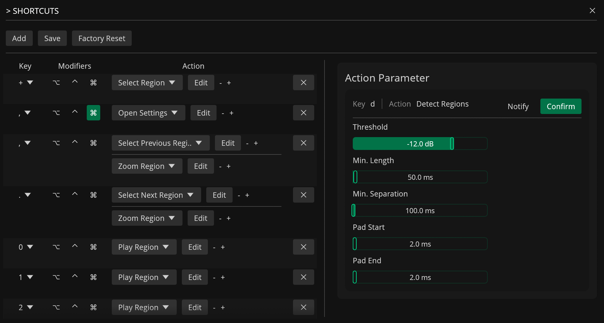
About
Shortcuts in Recorte provide a flexible and powerful method for triggering one or more Actions through the keyboard using a macro-style approach.
Rather than mapping keyboard keys to individual actions, each key can be customized to trigger multiple actions sequentially. Parameters for each action can also be customized, and confirmation dialogs or notifications can be enabled.
This approach allows for multiple shortcuts to be assigned to the same action using different parameters.
Shortcuts Editor
The Shortcuts Editor can be used to customize keyboard shortcuts by mapping keys to one or more actions. It can be accessed from the Settings menu to modify existing shortcuts or create new ones.
Editor Interface
The shortcuts table displays all configured shortcuts with the following columns:
- Key: Displays the character key bound to the shortcut. The dropdown can be clicked to change the key. For example,
'z'for Zoom,'c'for Action Palette. - Modifiers: Toggle buttons for Option, Control, and Command modifiers. For instance, Control+
'c'copies the selection. - Actions: Shows the action(s) triggered by the shortcut. The dropdown can be clicked to select from available actions (only actions that can be mapped to shortcuts are shown). The
+button can be used to add more actions to the same shortcut. - Edit: Opens the parameter pane for the selected action, where parameters can be customized.
Parameters Pane
When the Edit button is clicked for an action, a parameters pane appears on the right side of the editor. This pane allows parameters to be customized for that specific action. For example, when the 't' shortcut for Auto Trim is edited, the threshold value can be adjusted in decibels.
Confirmation Dialogs
Confirmation dialogs can be triggered for some shortcuts to prevent accidental actions. The following factory shortcuts are configured with confirmation:
'a'→ Apply Effects to Selected Regions'A'→ Apply Effects to All Regions- Control+
'a'→ Apply Effects to Selection
When triggered, a confirmation dialog will appear asking for confirmation before the action executes.
Modifier Keys
Keys can be combined with modifiers for more powerful shortcuts.
Available modifiers:
- Command ( )
- Control ()
- Option ()
Multiple Actions per Shortcut
A single key can trigger multiple actions in sequence. For example, the comma key (,) is configured to both select the previous region and zoom to it. This macro-style approach allows related actions to be chained together for efficient workflows.
Factory Shortcuts
The following tables list all factory shortcuts included with Recorte, organized by category. See Actions for a description of each action.
File
| Modifiers | Shortcut | Action(s) | Information |
|---|---|---|---|
| Command | o |
Open File | |
| — | n |
New File | |
| Command | w |
Close Active File | Confirmation dialog |
| — | s |
Slice File | 8 slices; confirmation dialog |
Playback
| Modifiers | Shortcut | Action(s) | Information |
|---|---|---|---|
| — | 1–9, 0 |
Play Region | 1–9 play regions 1–9; 0 plays region 10 |
| — | l |
Toggle Playback Loop |
Editing
| Modifiers | Shortcut | Action(s) | Information |
|---|---|---|---|
| Command | c |
Copy Selection | |
| Command | v |
Paste | Position: 0%; Mode: Add |
| Command | z |
Undo | |
| Command | Z |
Redo |
Region Actions
| Modifiers | Shortcut | Action(s) | Information |
|---|---|---|---|
| — | t |
Auto Trim Selected Region | Threshold: -24 dB |
| Command | d |
Duplicate Selected Region | |
| — | E |
Expand | Auto / Both / Region |
| Command | E |
Expand | Auto / Both / Transient |
| — | R |
Resize Region | |
| — | + |
Select Region | Longest |
| — | _ |
Select Region | Shortest |
| — | { |
Select Region | First |
| — | } |
Select Region | Last |
| — | [ |
Move Regions | -10% |
| — | ] |
Move Regions | +10% |
Transients & Detection
| Modifiers | Shortcut | Action(s) | Information |
|---|---|---|---|
| — | d |
Detect Regions | Threshold: -12 dB; zero-crossing enabled; confirmation dialog |
Recording
| Modifiers | Shortcut | Action(s) | Information |
|---|---|---|---|
| — | i |
Set Recording Length → Start Recording | 5 seconds |
| — | o |
Set Recording Length → Start Recording | 10 seconds |
| — | u |
Set Recording Length → Start Recording | 1 second |
Effects & Processing
| Modifiers | Shortcut | Action(s) | Information |
|---|---|---|---|
| — | a |
Apply Effects to Selected Regions | Confirmation dialog |
| — | A |
Apply Effects to All Regions | Confirmation dialog |
| Control | a |
Apply Effects to Selection | Confirmation dialog |
| — | S |
Send to Sampler | Source: File; Gain: -6 dB; Channel: 1; confirmation dialog |
Selection
| Modifiers | Shortcut | Action(s) | Information |
|---|---|---|---|
| — | m |
Mark Selection |
UI & Navigation
| Modifiers | Shortcut | Action(s) | Information |
|---|---|---|---|
| — | , |
Select Previous Region → Zoom Region | |
| — | . |
Select Next Region → Zoom Region | |
| — | z |
Zoom | Destination: Auto |
| — | Z |
Zoom All | |
| — | C |
Center to Selected Region | |
| — | w |
Toggle Waveform Mode |
Tools & Windows
| Modifiers | Shortcut | Action(s) | Information |
|---|---|---|---|
| — | c |
Open Action Palette | |
| — | r |
Open Audio Recorder | |
| — | L |
Open Lua Editor | |
| — | e |
Open Export Settings | |
| Command | , |
Open Settings |
Factory Reset
To reset all shortcuts to factory defaults, open the Shortcuts settings and click on the Factory Reset button.
Shortcuts File
To make it easier to share or edit shortcuts externally, Recorte saves all shortcuts as a .json file in %APP_FOLDER%/settings/shortcuts.json. The app reloads the file automatically when you re-open it.
Settings
General
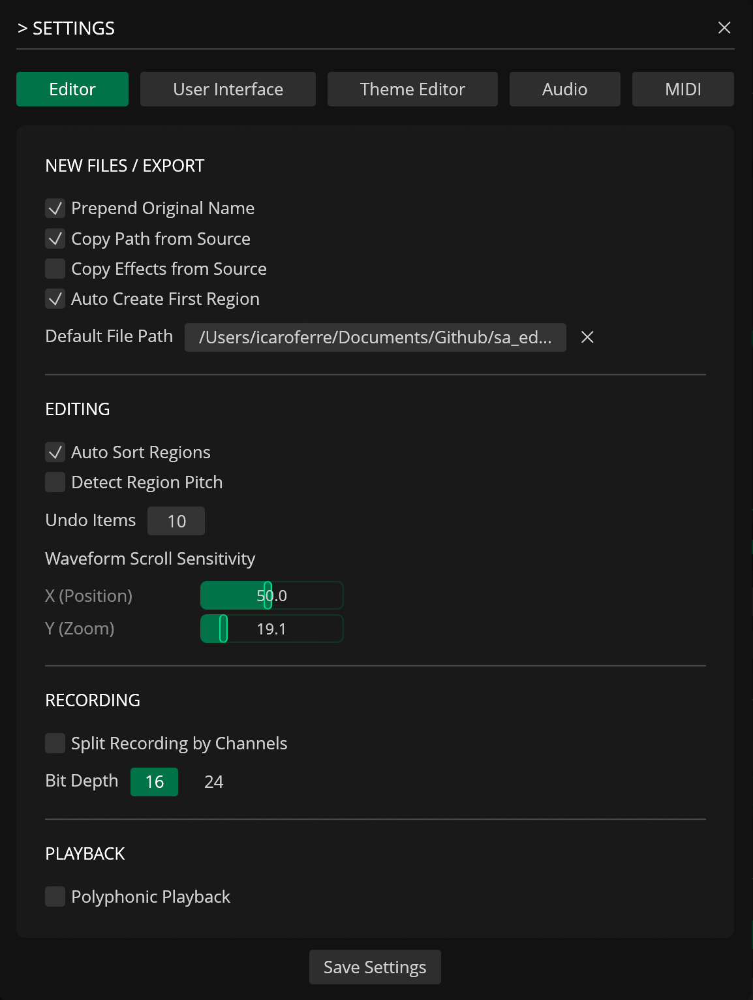
| Name | Description |
|---|---|
| Prepend Original Name | Prepend the original file name to the new file name when creating or exporting a file |
| Copy Path from Source | Keep the original file's path when creating or exporting a new file |
| Copy Effects from Source | Copy modifiers (metadata/attributes/tags) from the original file into the new file |
| Auto Create First Region | Automatically create an initial region when you create or open a new file |
| Auto Sort Regions | Automatically sort regions in the editor by start sample |
| Default File Path | Set the default path for new audio recordings |
| EDITING | |
| Detect Region Pitch | Automatically detect the pitch of newly created or edited regions |
| Undo Items | Set the maximum undo items per file (5-100) |
| Waveform Scroll Sensitivity | Set the mouse scroll sensitivity (horizontal = X, vertical = Y) |
| X (Position) | Horizontal mouse scroll sensitivity |
| Y (Zoom) | Vertical mouse scroll sensitivity |
| RECORDING | |
| Split Recording by Channels | Split each input channel into separate tracks/regions when recording |
| Bit Depth | Set the recording bit depth (16-bit or 24-bit) |
| PLAYBACK | |
| Polyphonic Playback | Allow overlapping playback of multiple regions/voices (polyphonic playback) |
User Interface
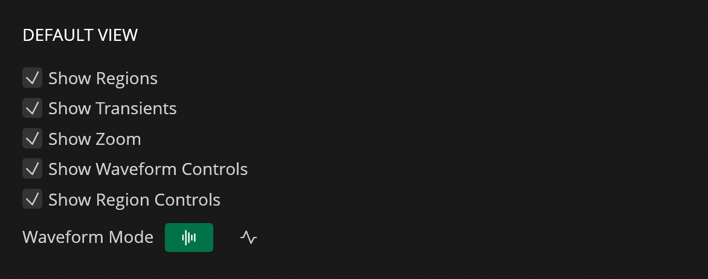
| Name | Description |
|---|---|
| Show Regions | Default: show region in waveform view |
| Show Transients | Default: show transient markers in waveform view |
| Show Zoom | Default: show zoom controls in the waveform view |
| Show Waveform Controls | Default: show waveform control elements (play/pause/other controls) |
| Show Region Controls | Default: show region control elements (play/pause/other controls) in the Regions panel |
| Waveform Mode | Choose waveform display mode (Bars or Line) |
Theme Editor
| Name | Description |
|---|---|
| Theme Editor | Open the theme editor UI to edit colors and other theme values (availability depends on licensing/limits) |
| Load Theme | Load/import a theme JSON from the themes directory into the theme editor |
| Export Theme | Export the currently edited/applied theme to a JSON file |
Audio
| Name | Description |
|---|---|
| AUDIO INPUT | |
| Audio Input Enabled / Disabled | Enable or disable audio input |
| Device | Select the audio input device to use |
| Sample Rate | Select the sample rate for the selected input device (choose from available rates) |
| AUDIO OUTPUT | |
| Audio Output Enabled / Disabled | Enable or disable audio output |
| Device | Select the audio output device to use |
| Sample Rate | Select the sample rate for the selected output device (choose from available rates) |
| CHANNEL ROUTING | |
| Preview Output | Set the output device channel for audio playback or preview (main output) |
| Sampler Output | Set the output device channel for the Send to Sampler action |
MIDI
| Name | Description |
|---|---|
| MIDI INPUT | |
| Enabled / Disabled | Enable or disable MIDI input processing |
| Port | Select the MIDI input port from detected MIDI devices |
| MIDI Monitor | Show incoming MIDI events for monitoring and debugging |
| MIDI OUTPUT | |
| Port | Select the MIDI output port used for sending MIDI messages |